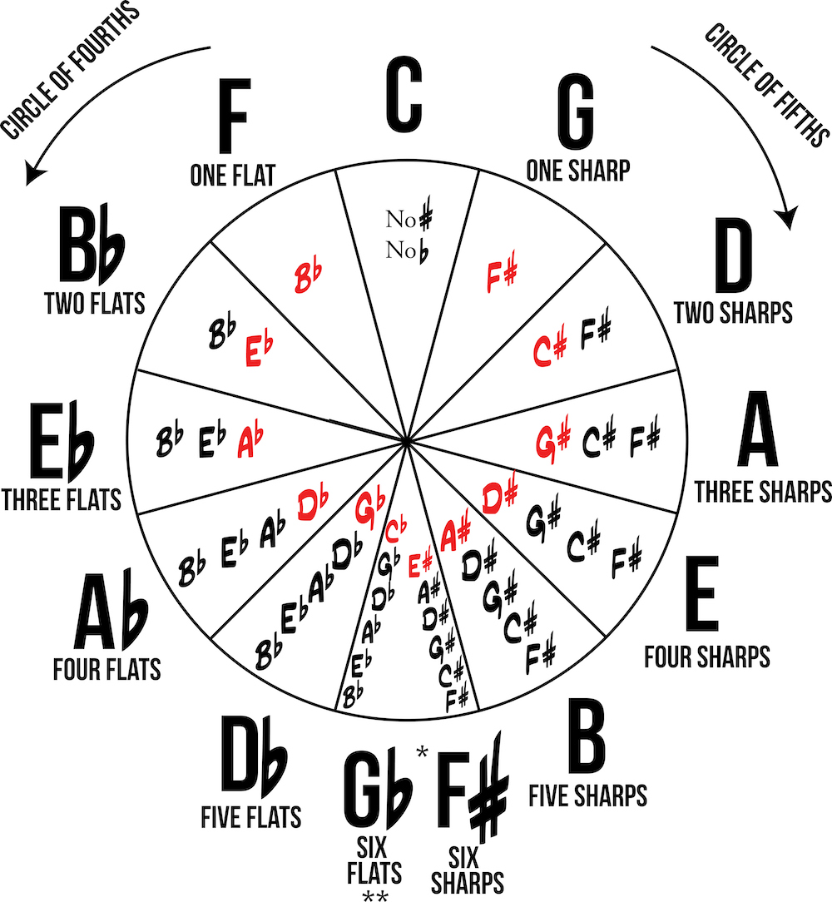
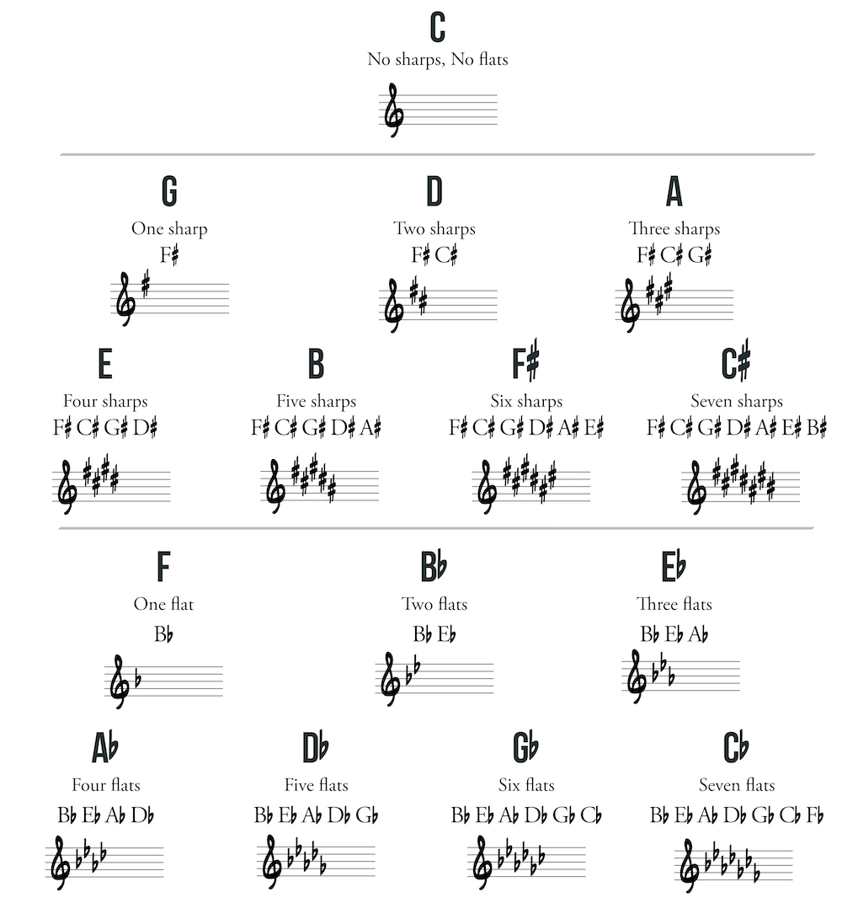

Now that you have played single-string major scales for each key, it is time to memorize each key signature. The circle of fourths/fifths contains all twelve chromatic notes. Following the circle counter-clockwise will give the interval of a perfect fourth between notes, while clockwise will give a perfect fifth.
Follow the circle clockwise in fifths. You will first come to the key of G. The key of G has one sharp and it is the note F#. F# is the seventh scale degree in the key of G. Each note along the circle of fifths adds one sharp each time. This added sharp is always the seventh scale degree of each new key (RED).
For example, in the key of D, keep the F# and add C# (the seventh scale degree in D). Next comes the key of A. Keep the F# and C# and add G# (the seventh scale degree in A). Continue in the same way all around the circle of fifths.
Follow the circle counterclockwise in fourths. This side works similarly to the sharp side, but rather than raising the seventh scale degree, we will lower the fourth scale degree (GREEN). Tip: the fourth scale degree also happens to be the next key in the circle of fourths.
For example: the key of F has one flat, B-flat, which is the fourth scale degree in F (or the next key on the circle). For the key of B-flat, keep B-flat, and add the fourth degree (or next key) of E-flat. Continue similarly around the circle of fourths.
*G-flat and F-sharp are enharmonically the same.
** Sudden urge to ride roller coasters.
Note: Since the key of C has no sharps and no flats, the keys of C sharp and C flat have seven sharps and seven flats respectively.
The key signature is placed between the clef and time signature at the beginning of a piece of music. Sharps or flats are placed on the lines and spaces of the staff to tell you which notes are raised or lowered in a given key. When a key signature indicates raising or lowering a pitch, that pitch remains altered throughout the entire piece.
